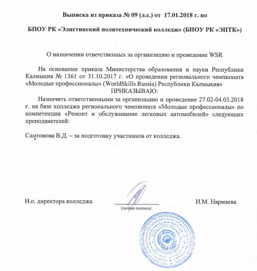
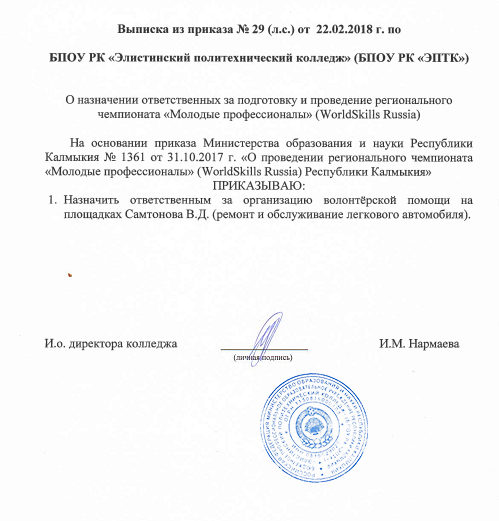

Результаты участия в чемпионатах «Молодые профессионалы», «Абилимпикс», в очных олимпиадах, конкурсах профессионального мастерства
| Мероприятие | ФИО участника | Результат | Ссылка на документ |
| Региональный чемпионат «Молодые профессионалы» (WorldSkillsRussia) в Республике Калмыкия, 28.02-4.03.2018г | Болдырев Семен Александрович | 1 место по компетенции «Ремонт и обслуживание легковых автомобилей» | Распоряжение Регионального координационного Центра по Республике Калмыкия №7 от 4 марта 2018года Приказ ЭПТК №09 (л.с.) от 17.01.2018 |
| Региональный чемпионат «Молодые профессионалы» (WorldSkillsRussia) в Республике Калмыкия 19-21.04 2016 | Мотев Алексей | 1 место по компетенции «Ремонт и обслуживание легковых автомобилей» | Диплом за подготовку победителя Приказ ЭПТК № 55 (л.с.) от 25.03.2016 elista . bezformata . com/listnews / molodie-professionali - worldskills / 45185739/ |

